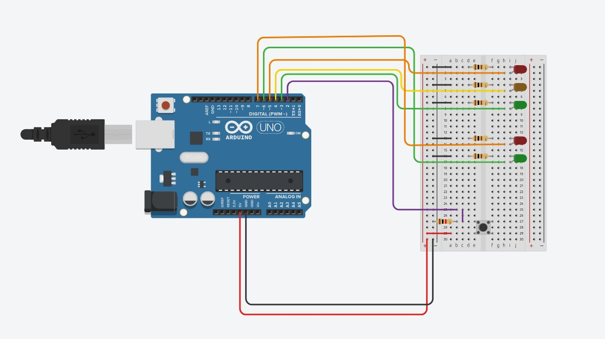
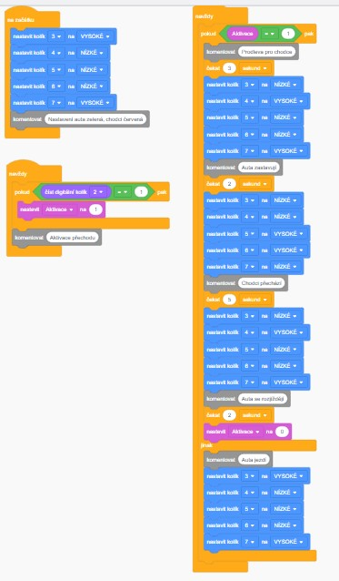

Úkolem tohoto miniprojektu bylo vytvořit buďto obvod fyzický, nebo jeho simulaci v tinkercadu za použití Arduino UNO. Já jsem si pro svůj miniprojekt připravil simulaci semaforu.
Popis
Jedná se o semafor u přechodu pro chodce, tudíž řídíme 2 semafory současně, jeden ze 3 žárovek, druhý ze 2. Je žádoucí, aby v běžném provozu byla zelená na semaforu pro silniční dopravu a červená pro chodce, po stisknutí aktivačního tlačítka pak chceme opak. Nemůžeme také ihned po stisknutí tlačítka změnit řád, neboť při velkém objemu chodců by se tvořila kolona. Taktéž musíme mít prodlevu pro bezpečné přecházení chodců, kteří vstoupili na přechod ke konci jejich vyhrazeného času.

Kód
Celé programování jsem tvořil za pomoci bloků, které ačkoliv nejsou “standardní” ani příliš efektivní, jsou přehledné a jednoduché na pochopení pro člověka, který nemá s programováním zkušenosti.

Odkaz
Kod
// C++ code // int Aktivace = 0;
void setup() { pinMode(3, OUTPUT); pinMode(4, OUTPUT); pinMode(5, OUTPUT); pinMode(6, OUTPUT); pinMode(7, OUTPUT); pinMode(2, INPUT);
digitalWrite(3, HIGH); digitalWrite(4, LOW); digitalWrite(5, LOW); digitalWrite(6, LOW); digitalWrite(7, HIGH); // Nastavení auta zelená, chodci červená }
void loop() { if (Aktivace == 1) { // Prodleva pro chodce delay(3000); // Wait for 3000 millisecond(s) digitalWrite(3, LOW); digitalWrite(4, HIGH); digitalWrite(5, LOW); digitalWrite(6, LOW); digitalWrite(7, HIGH); // Auta zastavují delay(2000); // Wait for 2000 millisecond(s) digitalWrite(3, LOW); digitalWrite(4, LOW); digitalWrite(5, HIGH); digitalWrite(6, HIGH); digitalWrite(7, LOW); // Chodci přechází delay(5000); // Wait for 5000 millisecond(s) digitalWrite(3, LOW); digitalWrite(4, HIGH); digitalWrite(5, LOW); digitalWrite(6, LOW); digitalWrite(7, HIGH); // Auta se rozjíždějí delay(2000); // Wait for 2000 millisecond(s) Aktivace = 0; } else { // Auta jezdí digitalWrite(3, HIGH); digitalWrite(4, LOW); digitalWrite(5, LOW); digitalWrite(6, LOW); digitalWrite(7, HIGH); }
if (digitalRead(2) == 1) { Aktivace = 1; } // Aktivace přechodu }